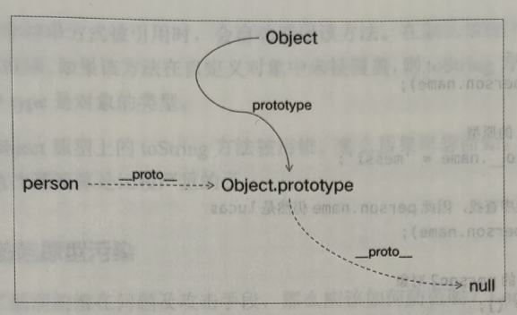
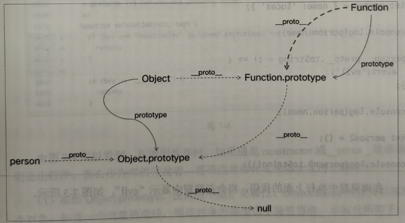
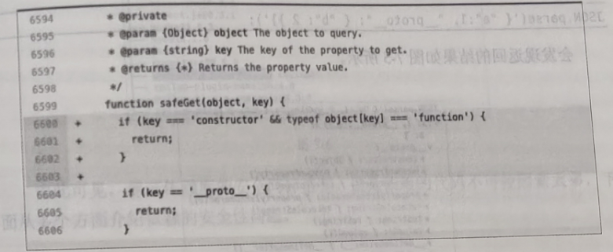
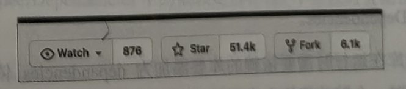
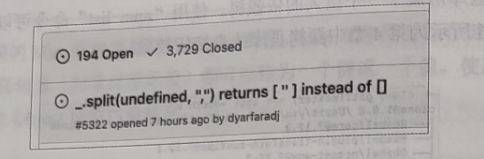
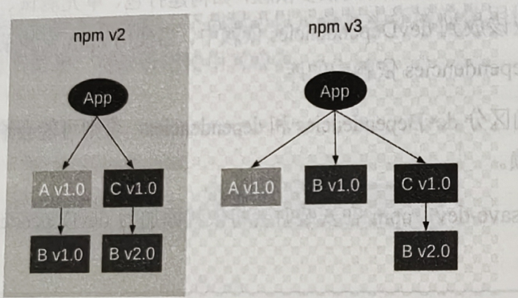

防护意外
开源库的使用环境存在太多未知性，因此不能想当然地认为会发生什么，正确的思路应该是防患未然，将可能发生的各种意外情况都考虑到。下面介绍几种常见的防护意外实践。
最小功能设计
开源库应该对外提供最小功能，尽可能隐藏内部实现细节。所有对外暴露的接口都是对外做的承诺，暴露的接口都要维护，后续迭代时永久向下兼容。所以，建议仅暴露有限的接口，不相关的功能不要对外暴露。
来看一个例子，guid 函数对外提供生成唯一 ID 的功能，其依一个内部计数要 count，在这里 count 就是不应该对外暴露的细节。示例代码如下:
export let count = 1;
export function guid() {
return count++;
}
另外一个常见的例子是类的属性。在 JavaScript 中，类的所有属性和方法都是公开的，但是这会造成类的细节被意外暴露。在如下的示例代码中，count 属性被意外暴露，count 被外部修改后，程将会发生错误。
class Guid {
count = 1;
guid() {
return this.count++;
}
}
const g = new Guid();
g.count = "error"; // 直接修改了 count 属性
更好的做法是把私有属性放到函数作用域中，一般是放到构造函数 constructor 中，示例代码如下，外部无法访间内部函数作用域中的变量 count。
class Guid {
constructor() {
let count = 1;
this.guid = () => count++;
}
}
const g = new Guid();
g.guid(); // 访问 ID
g.count; // 报错，访问不到
2022 年 6 月，ECMAScript 2022 正式发布，ECMAScript 2022 带来了原生私有属性。原生私有属性需要添加 # 前缀，外部无法访问原生私有属性。
class Guid {
#count = 1;
constructor() {
this.guid = () => this.#count++;
}
}
const g = new Guid();
g.guid(); // 访问 ID
g.count; // 报错，访问不到
最小参数设计
函数要对外暴露最小的参数，参数应尽可能使用简单类型，因为简单类型更安全，如果是引用类型参数，那么函数不要直接修改传入的参数。
举个例子，fill 函数可以实现用指定值填充数组，但是其直接修改了传入的参数，这可能不是使用者希望的行为，调用 fill 函数，传入的 arr 数组被修改了。
function fill(arr, value) {
for (let i = 0; i < arr.length; i++) {
arr[i] = value;
}
return arr;
}
const arr1 = Array(3);
const arr2 = fill(arr1, 1);
console.log(arr1); // [1, 1, 1]
如果要修改引用类型的传入参数，那么建议复制一份数据，在复制的数据上进行修改，切断和传入参数之间的关联
function fill(arr, value) {
const newArr = clone(arr);
for (let i = 0; i < newArr.length; i++) {
newArr[i] = value;
}
return newArr;
}
const arr1 = Array(3);
const arr2 = fill(arr1, 1);
console.log(arr1); // [empty × 3]
冻结对象
暴露给使用者的接口可能会被其他人有意或无意地更改，这会导致开发时运行良好的程序，在某些意外情况下出错。例如，我们引用了 jQuery 库后，可以修改其属性。
import $ from "jquery";
$.version = undefined;
$.version.split("."); // 报错
想要解决上述问题，可以将对外的接口冻结，这就需要用到 ECMAScript5 引入的 3 个方法，这 3 个方法都可以改变对象的行为。
| 方法 | 修改原型的指向 | 添加属性 | 修改属性配置 | 删除属性 | 修改属性 |
|---|---|---|---|---|---|
| Object.preventExtensions() | 否 | 否 | 是 | 是 | 是 |
| Object.seal() | 否 | 否 | 否 | 否 | 是 |
| Object.freeze() | 否 | 否 | 否 | 否 | 否 |
Object.freeze 方法的效果更严格，冻结对象的属性无法修改，如果尝试修改，那在严格模式下会报错，在非严格模式下会静默失败，修改不会产生任何效果。
import $ from "jquery";
Object.freeze($); // $ 对象的属性无法修改
$.version = undefined; // 外部无法修改 version
避免原型入侵
面向对象基础知识
大部分编程语言都提供了数据的抽象能力，如有序数据的数组、无序数据的对象等。将数据和对数据的操作封装到一起，被称作面向对象。这是一种更高维度的抽象工具，这种抽象工具可以对现实世界进行建模。
现实世界中的事物之间存在联系。以现实世界中的猫为例，猫中有布偶猫和狸花猫，显然狸花猫应该拥有猫的全部特性。在面向对象中这被称为继承，即细分的事物应该继承抽象事物的特点。
实现对象和继承有两种思路，分别是 CEOC 和 OLOO，下面简单介绍一下这两者
CEOC(Class Extend Other Class)是一套基于类和实例的实现方式，类作为对象的抽象描述，对象是类的实例。这种机制与其说是面向对象编程，不如说是面向类编程更准确。
OLOO(Object Link Other Object)是一套基于对象和关系的实现方式。例如有两个对象，如果能够直接让一个对象继承另一个对象，那么也能实现面向对象。在 OLOO 中，一般将父对象称为子对象的原型。在 OLOO 中没有类、只有对象，以及对象之间的关系。
原型之路
JavaScript 的面向对象是基于原型的。在 JavaScript 中，实现继承有多种方式。但是万变不离其宗，所有继承方式的背后，原理都是原型、下面介绍各种继承方式。
想要在 ECMAScript3 中实现继承，需要用到构造函数的方式，其原理也是基于原型的。例如，有两个构造函数 Parent 和 Child，通过修改 Child 函数的 prototype 属性，即可实现 Child 函数继承 Parent 的数的功能
function Parent() {}
function Child() {}
function T() {}
T.prototype = Parent.prototype;
Child.prototype = new T();
构造函数的方式有些不伦不类，如同强行给原型套了一个很像类的壳子，这对熟悉类和熟悉原型的开发者都不友好。所以，后来的 ECMAScript 新版本对基于类和 基于原型方向都做了探索。
构造函数的方式对熟悉类的开发者并不友好，所以 ECMAScript2015 带来了基于类的新语法，但这个新语法只是一个语法糖，其背后的原理还是原型。下面用类改写上面的示例代码，改写后的示例代码如下:
class Parent {}
class Child extends Parent {}
构造函数的方式对熟悉原型的开发者也不友好。ECMAScript 对基于原型的方向也做了探索，ECMAScript5 带来了 Object.create 方法，可以直接让对象继承对象，示例代码如下。最终 child 对象有两个属性，其中 a 属性是从 parent 对象继承的，b 属性是自己的
const parent = {
a: 1,
};
const child = Object.create(parent, {
b: {
value: 2,
writable: true,
enumerable: true,
configurable: true,
},
});
当使用 Object.create 方法创建子对象时，如果要定义子对象的属性，就需要用到上面的语法，没办法使用我们熟悉的对象字面量的方式了。
为了解决这个问题，ECMAScript 2015 又带来了 __proto__ 属性，这个属性可以让对象继承对象，
const parent = {
a: 1,
};
const child = {
__proto__: parent,
b: 2,
};
上面的方式都要求新建子对象，如果子对象已经存在，就无法修改其继承的父对象了。针对这个问题，ECMAScript 2015 带来了直接操作原型的方式，使用 Object.setPrototypeOf 方法可以修改已经存在的对象的继承关系：
const parent = {};
const child = {};
Object.setPrototypeOf(child, parent);
不过需要注意的是，直接操作原型的方式会有性能问题和兼容性问题。
原型入侵
JavaScript 世界的设计是基于原型的，所有的系统对象也是基于原型设计的。在 JavaScript 中，所有的对象都是继承自 Object.prototype，如果我们给 Object.prototype 添加属性，就会影响所有的对象。
例如：
Object.prototype.tree = function () {
console.log(Object.keys(this));
};
const obj = {
a: 1,
b: 2,
};
obj.tree(); // ['a', 'b']
使用上面的方式扩展原型会带来两个问题。第一个问题是，这样做会给所有对象增加一个可枚举的方法，使用 for in 遍历一个对象时会遇到麻烦，tree 方法会出现在 for in 的遍历中。
Object.prototype.tree = function () {
console.log(Object.keys(this));
};
const obj = {
a: 1,
b: 2,
};
for (const key in obj) {
console.log(key); // a b tree
}
为了避免遍历到原型上的属性，我们可以使用 hasOwnProperty 方法判断属性是否是对象自身的属性。而不是通过原型继承的。
Object.prototype.tree = function () {
console.log(Object.keys(this));
};
const obj = {
a: 1,
b: 2,
};
for (const key in obj) {
if (obj.hasOwnProperty(key)) {
console.log(key); // a b
}
}
由于我们的库可能会被用到各种环境，因此无法确保 for in 都添加了防御判断。针对这个问题，ECMAScript5 带来了新的方法，使用 defineProperty 方法可以配置属性的内部特性，但是需要注意 defineProperty 方法的兼容性问题。
将 enumerable 特性设置为 false 的属性，就不会出现在 for in 的遍历中了。
Object.defineProperty(Object.prototype, "tree", {
value: function () {
console.log(Object.keys(this));
},
enumerable: false,
configurable: false,
writable: false,
});
const obj = {
a: 1,
b: 2,
};
for (const key in obj) {
console.log(key); // a b
}
扩展原型带来的另一个问题是实现冲突。不同的库可能会扩展同一个方法。如里实现不一致，就会产生冲突，冲突的结果必然会导致一个库的代码失效，这会稳定性带来巨大的挑战。
下面介绍一个真实案例。前端库 Mootools 和 prototype.js 都对原型进行了扩展，它们都给数组扩展了 flatten 方法，当同时引入这两个库时就会发生冲突。
扩展原型还可能和新版本的系统函数冲突。自从发布 ECMAScript2015 以后，每年都会发布新的 JavaScript 版本，新版本使用年份命名，本章编写时最新的版本是 ECMAScript 2022，如果新版本的系统函数和我们扩展的原型属性重名，就会发生冲突。
综上所述，一定不要扩展原型属性，这是非常错误的做法。让我们一起保卫原型，保卫 JavaScript 生态。
原型污染事件
上一节介绍了扩展原型的危害，那么是不是只要我们自己不扩展原型就万事大吉了呢？正常来说确实如此，但有时候可能是在很隐晦的情况下修改了原型，从而造成很大的伤害。本节将介绍与扩展原型相关的一个安全漏洞。
2019 年，较流行的前端库 lodash 被曝出存在严重的安全漏洞 - “原型污染”，该漏洞威胁超过 400 万个项目的服务安全性。
漏洞原因
上述漏洞很隐酶，存在于 Lodash 库中的 defaultsDeep 方法中。defaultsDeep 方法的使用示例如下:
_.defaultsDeep({ a: { b: 2 } }, { a: { b: 1, c: 3 } });
该方法将第二个参数的可枚举属性合并到第一个参数的属性上，上述代码返回合并后的对象，如下所示：
{ a: { b: 2, c: 3 } }
然而这个操作是有隐患的，例如，通过以下代码精心构造的一个数据，可以修改原型上的 toString 方法，这样会影响整个程序的安全。
const payload = '{"constructor":{"prototype":{"toString": true}}}';
_.defaultsDeep({}, JSON.parse(payload));
详解原型污染
想要理解原型污染，需要读者理解 JavaScript 中的原型链的知识。
在 JavaScript 中，每个对象都有一个 __proto__ 属性指向自己的原型。例如，有一个对象 person，示例代码如下：
let person = { name: "lucas" };
console.log(person.__proto__); // Object.prototype
console.log(Object.prototype.__proto__); // null
对象的 __proto__ 属性组合成一条链，这条链被称为原型链。所有对象的原型链最终指向 Object.prototype。
Object.prototype 也是一个对象，Object.prototype 的原型是 null，null 没有原型。
将 person、Object、Object.prototype 之间的关系绘制出来：
上图中绘制的关系并不完整，因为函数 Object 也是一个对象，Object 的原型指向 Function.prototype。完整的原型关系图如下:
原型污染用到原型链的两个关键知识，一个是修改 Object.prototype 会影响到所有的对象，另一个是通过对象的 proto 属性可以获取对象的原型引用。
let person = { name: "lucas" };
console.log(person.name); // lucas
person.__proto__.name = "messi";
console.log(person.name); // lucas
let person2 = {};
console.log(person2.name); // messi
把危害扩大化，将代码修改为如下形式:
let person = { name: "lucas" };
console.log(person.name);
person.__proto__.toString = () => {
alert("evil");
};
console.log(person.name);
let person2 = {};
console.log(person2.toString());
每个对象都有一个 toString 方法，当对象被表示为一个文本值时，或者当一个对象以预期的字符串方式被引用时，会自动调用该方法。
在默认情况下，toString 方法被每个对象继承。如果该方法在自定义对象中未被覆盖，则 toSting 方法会返回 [object type]，其中 type 是对象的类型。
如果 Object 原型上的 toString 方法被污染，那么后果可想而知。以此为例，可见 Lodash 的这次漏洞算是比较严重的了。
防范原型污染
Lodash 库的修复方法如下：
在遍历合并时，如果遇见 constructor 或 __proto__ 敏感属性则退出程序。
那么作为库的开发者，需要注意些什么来防止攻击出现呢？
(1) 冻结 Object.prototype，使原型不能扩充属性。Object.freeze 方法可以冻结一个对象，如果一个对象被冻结，则该对象的原型也不能被修改。
Object.freeze(Object.prototype);
Object.prototype.toString = "evil"; // 修改失败
(2) 规避不安全的递归性合并，类似 Lodash 库的修复手段，对敏感属性名跳过处理。
(3) Object.create(null) 的返回值不会连接到 Object.prototype。这样一来，无论如何扩充对象，都不会干扰到原型了。
let foo = Object.create(null);
console.log(foo.__proto__); // undefined
(4) 采用新的 Map 数据类型代替 Object 类型。Map 对象用于保存键/值对，是键/值对的集合，任何值(对象或原始值)都可以作为一个键或一个值。使用 Map 数据结构，不会存在 Object 原型污染状况。
JSON.parse 补充
同样存在风险的是常用的 JSON.parse 方法。但是如果运行如下代码:
JSON.parse('{ "a": 1, "__proto__": { "b" : 2 } }');
复写 Object.prototype 失败了，__proto__ 属性还是我们熟悉的那个有安全感的 __proto__，这是因为浏览器 JavaScript 引擎(如 V8)在 JSON.parse 方法内部默认会忽略 __proto__ 属性。
依赖的安全性问题
一个开源库可能会直接依赖十几个到几十个其他开源库，这些库可能又依赖了别的库，这些库形成了巨大的依赖树。使用 npm list 命令可以查看完整的依赖树。
由此可见，保证依赖库的安全同样重要。但是依赖的代码不可控因素太多，下面从多个方面介绍依赖的安全性问题。
库的选择
npm 上托管了成千上万个库，其中不乏很多优秀的库，但也有很多库的质量一般，安全性也得不到保证，那么应该如何筛选一个安全的库呢？一般来说，可以参考下面的信息。
GitHub 上有很多有价值的信息，Star 数代表了一个库的知名度，知名度越高的库越值得信赖。
GitHub 上的 Issues 信息可以反映一个库的质量，一般 Issues 少的库质量更好。并且通过 Issues 信息还能看出一个库是否被积极维护中。下图所示为 Lodash 库在 GitHub 上的 Issues 信息截图，可以看出 Issues 修复数量较多。
npm 上的下载量也是重要指标，下载量可以反映真实环境的使用情况。下图所示为 Lodash 库的下载量，可以看出使用者较多。
建议使用前对依赖的库做一个完整检查，包括源码、打包、依赖项、使用情况和是否积极维护等。
正确区分依赖
npm 中存在以下 5 种不同类型的依赖，业务项目都用 dependencies 依赖即可，开源库需要正确区分和使用它们。这里重点介绍前 3 种的区别。
dependencies
devDependencies
peerDependencies
bundleDependencies
optionalDependencies
如果我们的库在运行时需要依赖的库要添加为 dependencies 依赖，那么在使用 npm 安装某个库时，会默认将这个库添加为 dependencies 依赖。
我们的库在开发时也会用到很多依赖，如构建打包、单元测试、Lint 等相关工具库，这些依赖应该放到 devDependencies 依赖中。当使用 npm 安装某个库时，不会安装这个库 devDependencies 依赖中的库。
用一定要正确区分 devDependencies 和 dependencies，否则可能会给使用库的项目安装不必要的依赖。
添加参数 --save-dev，npm 在安装时会将依赖添加为 devDependencies 依赖，示例如下:
npm install --save-dev rollup
peerDependencies 依赖平时用的不多，如果某个库需要依赖别的库才能使用，则可以用到 peerDependencies 依赖。例如，如果编写了一个 React 的插件，则可以将 React 作为插件的 peerDependencies 依赖，peerDependencies 依赖存放在 package.json 文件的 peerDependencies 字段中。示例代码如下:
{
"peerDependencies": {
"react": "^17.0.2"
}
}
peerDependencies 依赖其实是把依赖环境的安装交给了使用者，npm 在安装一个库时，会检测这个库 peerDependencies 中的依赖是否存在，不存在时会给出警告提示。
版本问题
假设有两个库 A 和 C，当这两个库都依赖同一个库 B，但是依赖的版本不一样时会发生什么呢?
在 npm v2 中，每个库的依赖都会安装在自己的目录下，但是这样完全不能复用，会存在重复安装的问题，这在 Node.js 中还好，但在浏览器应用中重复安装的库会被重复打包，一个库被重复打包会带来性能问题。
npm v3 修复了这个问题，如果两个库的版本能够复用，就会只安装一份。
npm 如何确定两个库依赖的同一个库是否能够复用呢？判断版本必须完全一致是不可行的，想要搞清楚这个问题，需要先介绍语义化版本(Semantic Versioning,SemVer)。目前，社区在使用的 SemVer 的版本是 2.0，简称 SemVer 2.0。
SemVer 规定版本号的格式为 主版本号.次版本号.修订号，版本号的含义如下。
主版本号: 当做了不兼容的 API 修改时
次版本号: 当做了向下兼容的功能性新增时
修订号: 当做了向下兼容的问题修正时
当两个库同时依赖的一个库的主版本号一致，只有次版本号不一致时，npm 在安装依赖时，会自动选择次版本号更大的一个进行安装。
按照 SemVer 规范，这样做是安全的，npm 能够这样做的前提是在两个库依赖的同一个库的版本号前面有个 ^。
版本号前面的 ^ 叫作版本号前缀，前缀还可以是 ~ 和无前缀。
不同前缀的区别如下:
{
"dependencies": {
"lodash": "^4.17.21", // 固定主版本，次版本和修订版本可以升级
"lodash": "~4.17.21", // 固定主版本和此版本，修改版本可以升级
"lodash": "4.17.21" // 固定版本
}
}
使用 npm 安装一个库时，默认会自动在版本号前面添加 ^，可以通过 npm confg命 令改变这个默认行为，命令如下:
npm config set save-prefix="~" # 默认为 ~
npm config set save-prefix="" # 默认不添加前缀
对于 dependencies 和 peerDependencies 中的版本号，建议使用 ^ 作为前缀，这样用户在使用我们的库时，可以避免重复安装依赖；对于 devDependencies，建议使用固定版本号，这样可以避免每次安装时版本可能不一致的问题。
上面提到库的 dependencies 依赖使用 ^ 作为前缀，这样库的依赖库就是动态版本。
使用我们库的项目，依赖库还是可能每次安装都不一致。为了解决这个问题，npm v5 中引入了 lock 文件，现在使用 npm 安装完会在项目的根目录下创建一个 package-lock.json 文件，里面对整个 node_modules 目录做了记录，可以保证下次安装时的一致性。
需要注意的是，package-lock.json 文件不会被发布到 npm 上，也就是说，我们库中的 lock 文件不会影响使用我们库的项目。
依赖过期
一般来说，库的小版本更新会修复某些问题，升级到新的版本是风险比较小的操作，建议读者实时保持小版本的更新。但是我们的库可能依赖了很多库，每个库的更新都不会通知我们，那么如何知道哪个库又有了新版本呢?
对于上述问题，可以通过执行 npm outdated 命令来解决。npm outdated 命令将检査过时的软件包。
Wanted 列是该命令给出的符合 SemVer 规范版本安全的最新软件包，Latest 列是最新的软件包。借助这个命令可以查看哪些依赖库有更新，然后进行升级，升级后不要忘记测试功能是否正常，
安全检查
即便是拥有众多使用者的库，也不一定就是安全的。下面介绍社区中曾经发生过的一些安全问题。
2016 年 3 月，一个开发者因为对 npm 不满，所以将自己所有的库都从 npm 下架了，其中包括被广泛使用的 left-pad 库，导致 Babel、React Native、Ember 等大量工具构建失败。这在当时引起了很多讨论，直接导致 npm 后来更改了规则，已经发布了的库不能随意下架。
antd 是非常流行的前端组件库，被大量团队的大量项目使用。2018 年 12 月 25 日，antd 组件的样式悄悄变了，所有的 Button 组件都被加上了雪花，这在当时引起了非常大的社区问题，antd 的这次事件暴露出的问题是运行良好的库可能在未来某个时间点改变行为。
2018 年 11 月，event-stream 库曝出其依赖的库被注入恶意代码，黑客利用该恶意代码窃取安装这个库的用户的数字货币。
2021 年 10 月 一款名为 UAParser.js 的 npm 包遭到黑客攻击，并被恶意代码修改。
如果依赖了上面的库，那么我们的库也会突然不能运行；可能在某一天悄悄改变了行为；也可能被注入了恶意代码，所以要谨慎地选择依赖的库。
那么如何能够及时发现依赖的库是否安全呢？可以通过 npm audit 命令，该命令运行安全审核，扫描依赖是否存在漏洞。下图所示为我们的深拷贝库的扫结果，提示 handlebars 库存在一个高风险问题，通过 Path 信息，还能清楚地看见 handlebars 库是如何被依赖引入的。
执行 npm audit 命令后，在控制台输出的最后面汇总了错误信息，有了这些信息，就可以修复并替换有问题的依赖了。
综上所述，一个核心原则是不要太依赖其他的库，依赖的库越少往往越安全，这需要库的开发者在效率和安全之间做好权衡。